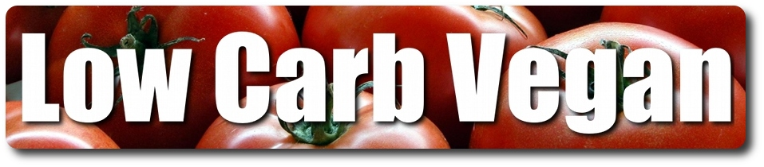

Por Paulo Victor Pinheiro (Paru) – Fisiculturista Vegano
1º – Este artigo é escrito com base em meus conhecimentos como Atleta Vegano, não sou profissional da área de nutrição. Este texto não dispensa o trabalho de um profissional de nutrição e preparador físico para avaliar se tens estrutura pra realizar um cutting ou como deve fazer. Devido a falta de profissionais com “mente aberta” forneço essas dicas para que o mesmo seja elaborado por qualquer com algum experiência em dietas, mas por sua conta e risco.
2º – Baseio boa parte das informações em conhecimento da internet, artigos científicos e experiências pessoais pois muita coisa deve/teve que ser adaptada pra nossa realidade alimentar, preços do mercado local e disponibilidade suplementar extremamente reduzida.
3º – Tenha uma balança para alimentos, se até hoje você faz dieta contando na colher ou apenas confiando nas medias do olho, esqueça isso, balança é muito importante em dietas controladas. Não precisa ser uma que tenha que ter muita precisão, escalas de 1gr servem, mas eu recomendo as digitais de até 3kg, elas servem para suplementos e alimentos.
ATENÇÃO> LEIA ESTE OUTRO ARTIGO ANTES:
Já existe um arquivo sobre como montar um dieta usando a taxa metabólica basal aqui:
http://www.musculacaovegana.com.br/posts/dieta-taxa-metabolica-basal/
Prerrogativas – Mini FAQ
– Posso fazer um cutting? “quero ficar rasgado!”
R: DEPENDE!!! Não adianta fazer um cutting se você não tem estrutura muscular para “cortar” a pele e ficar marcado com músculos aparentes.
EU SÓ RECOMENDO cutting pra quem já pratica atividade física a mais de um ano, obteve pelo menos 10kg de ganho com predominância de massa magra. Se você tem BF alto, mas seu IMC é normal ou baixo não faça cutting. Geralmente quem tem estrutura pra resultados bons em cutting aparece como Obeso para o IMC com BF não tão alto quanto se espera de um obeso de verdade (uns 20 a 25 pra homens e 25 a 30 para mulheres). A conta do IMC é apenas um referencia entre peso e altura e por isso não leva em consideração o seu volume muscular. Se você é visivelmente gordo, ou é magro(menos de 40 de braço para homens) e tem BF nessa faixa ou até menos, ao fazer um cutting vai ficar bem magro e sem conservar muita massa magra vai ficar bastante esguio até conseguir ver os tão desejados cortes musculares. Isso são estimativas!
- Cutting implica em redução de carboidratos da dieta:
R: Eu creio que sim, carboidratos são as principais fontes de energia do corpo humano, já as proteínas tem função energética e estrutural, então opta-se por reduzir as fontes apenas energéticas e usar mais fontes com múltiplas funções. Mas, isto não implica em retirar todo o carboidrato da dieta, usa-se esta fonte de maneira otimizada e inteligente, já que todos os alimentos vegetais tem carboidratos é praticamente impossível ter uma dieta vegana 0 carb(um onívora também é quase impossível, mas costumam chamar de 0carb dietas com até 50gr de carboidratos), além de que esta condição pode ser muito danosa ao corpo humano.
- Preciso fazer atividade física?
R: SIM. Se você não pratica nenhuma atividade não deve ter massa magra para se preocupar em preservar, a atividade física gera estímulos musculares responsáveis pela manutenção do volume, se você não usa um musculo o corpo vai atrofia-lo por não haver necessidade de mantê-lo grande e consequentemente gastando energia.
- 4×12 faz secar, né?
R: Não existe regra de que séries maiores gastam mais energia do que séries curtas ou auxiliam à perda de peso, o gasto de um exercício varia com infinitos fatores de pessoa pra pessoa, carga, execução, descanso, etc. Claro que em exercícios mesma de carga o que for executado com mais repetições vai demandar mais esforço, mas ao reduzir a carga e aumentar as repetições o mesmo parâmetro comparativo não pode ser estabelecido.
Como geralmente em cutting se tem um redução de calorias, o treinamento com muito peso fica mais difícil, mas isso não é regra. Somente dietas mais extremas causam um grande queda energética e assim um treinamento menos intenso é requisitado, logo por reduzir as cargas acaba-se aumentando o numero de repetições para continuar causando a fadiga muscular. Você pode continuar fazendo o mesmo treinamento e alterar caso venha se sentir mais fraco, ou mudar tudo para dar um novo estimulo ao corpo e prever que no futuro não terá tanta energia.
A inclusão de aeróbicos é importante devido à ajuda no gasto calórico.
- Estou muito acima do peso, cutting me ajuda?
R: Estar acima do peso desejado não quer dizer que seja obrigatório sofre num cutting para perder peso. Primeiramente deve ter avaliação profissional para posteriormente conseguir uma reeducação alimentar, aprender a comer melhor, perder peso com dietas apenas hipocalóricas e alimentação variada. Em cutting, como objetiva-se a manutenção da massa magra, a opção por certos alimentos não é sempre a escolha mais saudável, e como a dieta deve ser muito bem calculada fica complicado variar a alimentação para torna-la saudável e sustentável a longo prazo.
– L-Carnitina, Óleos de coco, cártamo, alho, etc ajudam?
R: NÃO. Isso não é nem thermogenico e seus efeitos na mobilização de gordura não são cientificamente comprovados. Os óleos virgens servem apenas como fonte de gordura boa.
- Thermogenicos ajudam?:
R: Dependendo da fórmula sim. A base de quase todos é a cafeína, que acelera o metabolismo. Mas não confie o sucesso do seu cutting nisso. Se optar por usar, mantenha sua dieta e treinamento como se ele não existisse em seu plano alimentar. Eu costumo usar eles após algumas semanas, como uma “cartada metabólica”: Com o passar do tempo em dieta restritiva e redução da gordura o corpo tende a entrar num modo “acomodado” com o funcionamento com pouca energia e/ou quando a gordura cai muito em relação ao volume de massa magra, ele pode entender isso como uma condição crítica(gordura é fonte de energia, proteção dos órgãos torácicos e revestimento térmico).
– Clembuterol, Efedrina e Salbutamol?
R: Eles são drogas de venda controlada que aceleram o metabolismo de diferentes formas e acompanhados de uma lista grande de efeitos colaterais. O uso é por sua conta e risco, mas eles não interferem na dieta, que é o foco desse artigo.
- Devo ficar sem comer carboidratos a noite?
R: Se você se sentir bem assim, não tem problemas. Esse mito deu que não pode comer carboidrato a noite deixa muita gente tensa. Quem treina a noite pode sentir constantes tonturas. A função da moda de cortar carboidratos a noite é pressupor que você já realizou a maior parte das duas atividades diárias e não é mais necessário continuar ingerindo muita energia, assim usa-se o glicogênio sem riscos de acumulo de energia. Depende muito da pessoa e de como ela se sente, pode ser uma forma de controlar a dieta, mas pode comprometer o seu treinamento. Eu costumo manter carboidratos em todas as refeições.
- Dieta pra mulher deve ser diferente?
R: Não. As contas e divisão das refeições é a mesma.
- Quanto tempo fico em cutting?
R: Por ser um estado de dieta rígida e que sempre vai ficando pior, não é muito comum ficar muito tempo tem Cutting. Geralmente com 8 a 12 semanas você já deve observar excelentes resultados. Se isso não ocorreu é porque errou a dieta ou entrou em cutting sem ter estrutura.
- Quais suplementos devo usar?
R: Suplemento em cutting não é regra, mas ajudam muito devido as alguns serem fontes de proteína com baixo carboidrato. Pode-se optar por um cutting sem suplementos contendo apenas alimentos proteicos.
A suplementação básica fica por conta da proteína isolada vegetal, aminoácidos isolados para evitar o catabolismo e dietas muito severas, thermogencios e dependendo do nível de restrição da dieta também pode-se suplementar alguns lipídios visando a manutenção de colesterol e nível de Ômegas. Eu sempre uso um multivitaminico devido a pobreza da dieta e dificuldade em variar sempre os alimentos.
- Posso comer de tudo?
R: Teoricamente sim, você poderia comer até açucares, pães, bolos refinados só mantendo as calorias da dieta. Mas, além destes alimentos serem muito calóricos, o que implicaria em um consumo bastante reduzido, a presença de alimentos com alto índice glicêmico vai gerar picos de insulina que indicarão ao seu corpo o armazenamento/poupar energia, dificultando a perda da gordura. Ou seja, é um sim que soa como um não, eu evito.
- Preciso reduzir o sódio da dieta?
R: Depende, a ingestão de sódio não precisa ser alta independente da fase, mas a redução durante a fase final do cutting vai proporcionar um efeito estético melhor, mas não duradouro. Se você não precisa de um shape limpo por pouquíssimos dias competir, fazer fotos(ou até festas) o ideal é sempre ter um ingestão baixa e constante de sódio, assim vai ter sempre um nível adequado de retenção hídrica no corpo e não vai ficar inchando e desinchando por ficar muito sensível ao sal.
- Devo evitar glúten e soja?
R: Eu não tenho problemas ou desqualifico soja e glúten(proteína do trigo) como fontes proteicas. Busco alimentos não transgênicos e vario as fontes. Se você os evita ou prefere fontes Non-GMO, orgânicas ou prefere evitar tais alimentos por quaisquer inseguranças ou alergias basta adaptar o seu cutting, isso só irá reduzir(ainda mais) o leque de opções. Geralmente reduzo esses alimentos pela presença do sódio neles, mas isso em apenas algumas fases da dieta.
Agora depois dessas duvidas básicas, vamos ao texto:
Esse texto vai te nortear em como fazer um cutting, baseado em minhas experiências pessoais e alimentos/suplementos encontrados no Brasil.
Em cutting(dietas voltadas para o emagrecimento) o que importa é que o balanço de macros dentro das calorias seja favorável ao emagrecimento e manutenção da massa magra, cutting não é apenas emagrecer, cutting é retirar a gordura mantendo a massa magra com o máximo de eficiência possível neste processo.
Para isso devemos ingerir menos calorias do que gastamos, o défice calórico é um dos pilares do cutting, não adianta ter a alimentação mais limpa do mundo se na média de tempo você absorver mais energia do que é capaz de gastar.
Então o cutting será norteado pelo resultado desta conta: TMB + gasto com atividades físicas – XXX Kcalorias. Este será o valor será sua meta diária, ou seja, nunca passar disso, exceto em emergências, em que no caso é melhor comer qualquer coisa do que ficar sem uma refeição(por exemplo uma viagem na estrada com algum acidente e as marmitas programadas não durão o novo tempo de viagem).
Depois que você já sabe disso pois leu no link do início do texto, irá montar sua planilha num programa e colocar nas linhas “Refeição 01″, “Refeição 02″, “Refeição XXX” até pelo menos 6 a 8. Pula umas 05 linhas pra cada refeição, e nas colunas coloque: Kcal, Proteínas, Carboidrato, Lipídios. Isso tb tem no link acima). As refeições devem preferencialmente ser espaçadas a cada 3horas. Depois destas 05 linhas coloque uma para ser o Total daquela refeição. Não esqueça de colocar refeições como Pré e Pós-treino.
Espera-se alguma prática em montar dietas, muita gente só leva dieta a sério quando é entra em cutting, isso acaba sendo um grande erro, mas dependo do objetivo de cada um, o off/bulking desregrado acaba sendo algo comum. Com sua planilha pronta você vai colocar o que costuma ou irá comer, quantidades e preencher os dados de kcal, ptn, cho e lip. Para esses dados vc pode usar as embalagens dos alimentos (lembre-se que representa os valores secos, se fala em 50gr de PTS crua, ao comer 50gr dela hidratada não vai garantir nem 1/3 do valor nutricional esperado) ou sites como o FatSecret ou CronoMeter
Nessa hora que o veganismo oferece diferença e um pouco de dificuldade, por não conter os “alimentos animais” que são predominantemente proteína e gordura, tem-se um pouco mais de trabalho em colocar esses dados e enquadrar nos valores das proporções. Pronto, sua dieta esta pronta. :p
MINHA FORMA DE FAZER
1º – GARANTA AS PROTEÍNAS:
Eu costumo garantir pelo menos as 2gr de proteína por kg e depois ir colocando os carboidratos mais limpos possíveis. Ou seja, coloco os suplementos e os alimentos vegetais de maior teor proteico que conheço.
Como eu já tenho experiência, sei mais ou menos quanto de cada coisa posso botar, se você nunca fez um dieta vai colocando o quanto geralmente come, que depois vem o ajuste.
Exemplos: Suplementos de proteína isolada, Tofu, Glúten, derivados de sojas, feijões, castanhas, grãos, cereais…
Os vario em todas as refeições, eu não tenho problemas em tomar café da manhã com tofu ou começar o dia comendo grão de bico…
2º – ESTEJA SACIADO:
Coloco os alimentos “saciativos”, chamo assim aquilo que tem pouco valor nutricional, costumam ter muita água, algum coisa de carbo, proteína, lipido e fibras, ou seja, realmente pra forrar o estomago e evitar a fome. Estes alimentos possuem poucos valores nutricionais, usando bastante eles alteram pouco os dados da dieta. Podem ser escolhidos pelo sabor, vitaminas ou até como fontes de proteína, já que alguns deles tem alguma coisa.
Exemplo: BROCOLIS(sempre!), Couve Flor, Folhas em geral(principalmente no almoço e janta onde costumava comer mais), palmito, aspargos, alguns “temperos” como tomate e cebola.
3º COMA CARBOS:
Depois vou colocando carboidratos “puros e limpos”, ou seja, alimentos que são praticamente carboidratos com bons índices glicêmicos.
Exemplos: arroz integral, batata doce, aveia, aimpim, inhame.
Nesta hora que a dieta ganha forma, você pode optar por colocar um mingal de aveia pela manhã, arroz no almoço, batata doce a noite, pra ter uma sensação de estar alimentado mediante os padrões antigos de alimentação, para que depois esteja acostumado a passa um dia inteiro comendo batata-doce ou algo similar, pois variar muito a dieta da muito trabalho para preparar as refeições.
4º FRUTAS PODEM:
Se quiser, coloque algumas frutas, apesar de serem doces, um pouco de frutose não gera picos de insulina, por precaução eu evito frutas desidratadas ou extremamente doces. Quando uso frutas as coloco no lanche, mas geralmente nem uso, prefiro poder comer mais arroz ou batata.
Exemplos: Banana, abacaxi, maçã.
5º TENHA GORDURAS BOAS:
A parte dos lipídios vai depender dos alimentos anteriormente colocados, mas geralmente fica baixa, assim acrescento algumas colheres de azeite virgem ou óleos ricos em Ômegas 3, 6 e 9 à noite ou com saladas.
Exemplos: Azeite virgens de oliva, coco, linhaça, cártamo, prímula.
10 a 30gr de lipídios é um bom valor para ser usado como parâmetro, pode ser maior se você usar muitas castanhas e grãos na dieta.
6º – AJUSTES:
No final da tabela, uso fórmula de auto-soma para somar os totais de cada refeição e abaixo dos totais uma linha com a fórmula pra dividir o total da dieta pelo meu peso corporal.
Agora você vai ver como as Kcals estão distribuídas e se sua meta proteica foi atingida. Vai alterando as quantidades dos alimentos para adequar aos valores. Como tudo deve ser pesado eu seguir a mesma dieta por 15 a 30 dias, despois desse tempo o peso deve ter reduzido, logo a TMB vai mudar e a dieta terá que ser recalculadas. Nessa hora aproveito pra mudar os alimentos da dieta e deixa-la menos chata.
Outra forma de fazer é calcular o gasto para dia e montar vários cardápios, um para cada dia da semana, mas me deu muito trabalho ter que fazer tudo em pouca quantidade. Você também pode não seguir um dieta regrada e ir anotando o que come e ao final do dia tentar fazer o balanço energético, isto é um convite ao erro, pois se o valor for maior terá que ficar sem comer mais naquele dia ou descontar tudo o que comer dos próximos dias e desencadear uma bola de neve igual a que você vai ficar :p
Eu o que muita gente faz e dá certo: Programo tudo para um tempo e como não enjoo cozinho tudo no final de semana para as refeições dos próximo 7 dias. e logo peso aquilo que será armazenado em porções individuais para as refeições fora de casa.
Alguns exemplos de alimentos que costumo usar:
Fontes Proteicas:
Suplementos de proteína isolada, tofu, tempeh, glúten(feitos em casa cuidado ao avaliar os valores dos macronutrientes), Embutidos veganos(cuidado com o sódio e com o preço), derivados de sojas, feijões, castanhas(com moderação), grãos em geral(grão de bico, amendoins), cereais
Fonte de Saciedade:
Brócolis, Couve-flor, aspargos, palmitos, tomate, cebola, folhas em geral. Gelatina de agar-agar também é ótima para a saciedade, pode ser feita com suco de frutas integral(vai ter caloria) ou com refrescos em pó dietéticos. Folhas verdes são liberadas.
Fonte de bons carboidratos:
Batata-doce, Arroz integral(branco, preto, vermelho), inhame, aipim, trigo(tipo o de quibe bom para saladas ou fazer quibe com PTS).
Fontes de gorduras boas:
Castanhas, grãos, azeites, virgens de coco, linhaça, cártamo, prímula.
Frutas: Praticamente todas sem muito doce e uso moderado. Se a dieta for muito restrita ela devem dar lugar a fontes de carboidratos puros.
Temperos:
Costumo usar alho, cebola e tomate para temperar. Além de muitas especiarias.
Opções de composição variadas, mas de baixa caloria:
Leites vegetais: Soja, Aveia, Amêndoas, Amendoim, castanhas, hemp(importar ou fazer em casa, kkkkkkk)
Pimentas: servem para temperar, tem baixa caloria, baixo sódio e causam efeito thermogenico;
Condimentos e especiarias: Praticamente todos livre de sódio, então use para mudar o sabor dos alimentos e/ou ajudar na saciedade.
Bebidas lights ou dietéticas: Se for 0carb o uso é livre, só não esqueça de também beber água ao longo do dia. Cuidado com o sódio delas, algumas tem valores extremamente altos. (Eu fico viciado em Clitgh nessa época)Água: Sério, a dieta tem que ter muita água sempre e nesta fase de cutting ela pode ser usada para enganar a fome. Mas, bela pelo menos 3 a 4L de água por dia.
Obs: Pelas restrições de carbo e engessamento da dieta, a mema costuma ficar pobres em vitaminas e sais minerais, por isso que eu sempre uso um multivitaminico para garantir que não vai faltar nada.